Correspondence
WUTHERING.UK
P.O. Box 1302
Grand Marais, MN, 55604
USA
But first something about the Dark Muse
 All at sea with the Dark Muse
All at sea with the Dark Muse
To begin
Light snow drifts gently down from low clouds draped over a misty boreal forest. Deer in their grey winter coats process through the fir and spruce. Ravens and crows dolefully croak and caw back and forth. And I burn a daytime candle. Such an ambience to convey my thoughts about my Dark Muse1 muse: Any of the nine sister goddesses in Greek mythology presiding over music, literature, and arts, or a state of deep thought or abstraction, e.g., to enter a muse over a poem, or a source of inspiration, e.g., She is my muse. .
Do you have an affinity for things on the gloomy side? Do you find dreamy what they find dreary … like when an overcast day brings on a strangely sanguine melancholy … or a stormy night is frightening in a wonderfully thrilling sort of way? Does twilight free your senses and deepen your thoughts? Perhaps you’ve paused to gaze transfixed upon an old, abandoned cemetery, or a lonely, nondescript landscape. And of course you’re quickly maxed out on happy-clappy, sunny-cheery. You prefer candlelight over artificial light, old architecture over new, the genial disorder of wild nature over predictably orderly gardens. The spectacular is ho-hum, but the subtle and hidden are magnetic. And wouldn’t it be grand if every month (or week!) we celebrated Halloween? If yes to any of this, you might understand what I’m trying to say here.
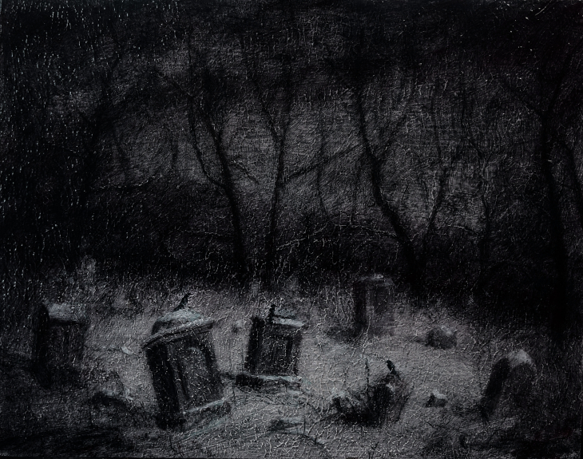 Transfixed by an abandoned graveyard by octonimoes@DeviantArtThe first elephant I must immediately escort out of the room is the modern goth subculture2 …described here as well as anywhere. In very short, I believe they, like many, can sense dark, but for whatever reasons only want to express it, explore it very narrowly through goth music and fashion. Lots more about why goth seems to skip the Dark Muse later… , as well as all the sensationalist gothic horror fright memes—vampires, witches, demons, nasty mean this, campy evil that. Yes, my Dark Muse would hopefully include, be a superset of what today is called goth and gothic, but I hope to go deeper and more elemental than most modern takes I’ve seen on dark. Right up front: My version of dark is not meant to shock or frighten. My Dark Muse contains nothing cruel nor evil nor sinister nor satanic3 As philosopher and psychologist John Vervaeke said in describing the modern crisis of anxiety and dysphoria, “Horror is the aesthetic of when you feel like you’re losing your grip on reality.” Nothing to gain with horror memes. Not going there… . Not the Star Wars “dark side,” not the barbarism à la Heart of Darkness, and not the psychic dark described by Freud or Jung. I’m after something more subtle, discriminating, and inward-personal. I hearken back to a golden era when dark was the currency, namely, the early nineteenth century, a time when key poets (e.g. the Brontës) showed us how triste and Stygian can lead to subtlety and sublimity4 Indeed, sublimity. More on Edmund Burke’s (as well as Bertrand Russell’s) false, “they don’t get it at all” tedium on sublimity later. In short, sublime is what we may find beyond mere beauty, touching what Dostoevsky is saying here: There are seconds, they only come five or six at a time, and you suddenly feel the presence of eternal harmony fully achieved. It is nothing earthly; not that it is heavenly, but man cannot endure it in his earthly state. One must change physically or die. The feeling is clear and indisputable. As if you suddenly sense the whole of nature and suddenly say: yes, this is true. This is not tenderheartedness, but simply joy. … Perhaps awe instead of joy? Again, much more as we go along… . I’m talking about a dark that one doesn’t outgrow, rather, that sustains. There should be no “aging out of the scene,” rather, a continued deepening and widening for one’s entire life.
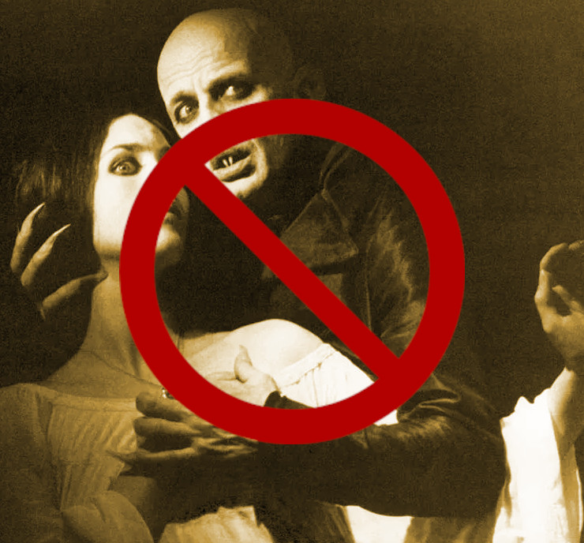 No, Klaus, don't do it!Another ox gored is my rejection of modern dumbed-down American street English, which has permeated modern society—virtually worldwide. Basically, I mean to sound more erudite, sophisticated, intellectual with my sort of past-century British-feeling English. Why? Simply because the English of the early-nineteenth century was like a thoroughbred race horse, sleek and powerful and capable of amazingly deep and expressive things; whilst modern American street English is beggared, destitute, impoverished and requires a buy-in to a particularly base, ignorant, crude and aggressive hipster Zeitgeist. Which I repudiate, not going there—although I’m sure I will occasionally slip up. Back in the day people were more genteel, thoughtful, fine-spoken. They could express themselves with utter sublimity. They understood the human need for holiness, grandeur, the eternal. Compare this with the modernists we see everywhere today who believe being coarse, crass, base, and irreverent is somehow progress… But on the other hand, it might just be that I’ve finally succumbed to the influence of all those schoolmarms back in my distant childhood who had us read Romantic Era lit, holding up that “wordy” other-century English as superior. They were right, you know. And yes, I’ll drop foreign as well as Latin words and phrases, my foreign language being German… You’ve been warned.
Dark like me?
A quick litmus test. I present here a short, simple poem from my main
darkness benefactress, the poetess who stands at the centre of
everything I mean to say about dark—Emily Jane Brontë! 5
Oddly enough, I’ve never read her Wuthering Heights and do
not intend to. However, her poetry I read continually, discovering new
things, gleaning deeper insights each time. See here for a quick
biography.
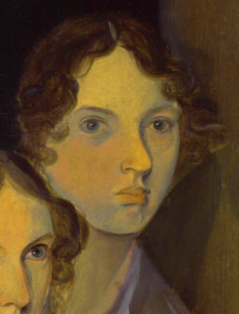
Fall, leaves, fall; die, flowers, away;
Lengthen night and shorten day;
Every leaf speaks bliss to me
Fluttering from the autumn tree.
I shall smile when wreaths of snow
Blossom where the rose should grow;
I shall sing when night’s decay
Ushers in a drearier day.
Direct, blunt even. But there it is: Either she speaks to something in you, or you’re part of the majority who finds it—weird, abnormal, morbid, overwrought, even sick or evil. To be sure, my dark penchant gets mostly deer-in-headlights responses, if not outright hostility. The openly hostile see my dark druthers as morose, morbid, as “wallowing in self-pity” or “dwelling on the negative.” I beg to differ…
Here is something a bit lighter but the same basic idea from
Christina Rossetti 6
See here for a bio. She is considered by many Britain’s
most prolific poet.
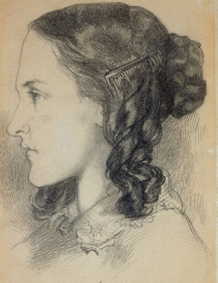
Fade tender lily,
Fade O crimson rose,
Fade every flower
Sweetest flower that blows.
Go chilly Autumn,
Come O Winter cold;
Let the green things die away
Into common mould.
Birth follows hard on death,
Life on withering:
Hasten, we shall come the sooner
Back to pleasant Spring.
These two poems are not being glum or morose. Rossetti would carefully exposit a dark fatalism, ending with hope bound in humility. I like to think they are expressing an informed, matured melancholy that bespeaks a deeper understanding of life.
And another poem7 As I’ve found, the Dark Muse finds its best, most concentrated expression through poetry. Much more on why mainly poetry delivers the ineffable of darkness later. , here Longfellow’s Snow-flakes from a collection published in 1863
Out of the bosom of the Air,
Out of the cloud-folds of her garments shaken,
Over the woodlands brown and bare,
Over the harvest-fields forsaken,
Silent, and soft, and slow
Descends the snow.
Even as our cloudy fancies take
Suddenly shape in some divine expression,
Even as the troubled heart doth make
In the white countenance confession,
The troubled sky reveals
The grief it feels.
This is the poem of the air,
Slowly in silent syllables recorded;
This is the secret of despair,
Long in its cloudy bosom hoarded,
Now whispered and revealed
To wood and field.
Here I see Longfellow8 Go here for a quick biography. HWL was not typically dark, rather, a popular “uplifting” poet with a big audience. That’s what makes this selection so unique for me. looking to the natural world and poetising9 The idea of poetising, the poetisation of nature and life was central to the Romantic Movement. It parallels the long-standing belief that we humans explain ourselves through, embed our lives in narratives, and in olden times nature was the stage. , to be sure, darkly. As a result agents of mental affliction and depression—despair, grief, misery—are transformed into more equanimous states of sadness and melancholy resulting in a higher emotional maturity. In some paradoxical way, nature and darkness as witnesses will eventually become healers. As if the initial agony and sorrow are a ravaging cancer or virus that eventually fades into remission, but can never entirely be eliminated while on Earth.
This poetising of nature as darker and more mystical was the modus operandi of my select nineteenth-century poets10 Dark as a teacher. Novalis, who we’ll meet later, described in exceptionally moving poetic terms the night as a soother and healer. . Rather than avoid, they embraced the dark, something we today in our brightly-lit, cordoned-off world might consider counter-intuitive, if not wrong-headed. I contend we’ve lost this subtle art of moving hardship, tragedy, emotional crises into a stasis remission melancholy, of finding a modus vivendi11 modus vivendi: An arrangement or agreement allowing conflicting parties to coexist peacefully, either indefinitely or until a final settlement is reached, or (literally) a way of living. with the trials and tribulations of life as our ancestors once did.
Surely we suffer poorly. All we may ever do is usher the initially searing, inescapable pain to a dull ache in the backdrop of time. Though I would say this was better understood in the past than today. They did not attempt to contain, disguise, or process greif, rather, greif was faced directly, pain was shared. Emotional space was allotted, support communal, organic, and natural. Strikingly different from today was their acceptance of doom and fate, two concepts antithetical to our dynamic, positivist, self-determining, fix-everthing-quickly modern attitudes.
Consider Queen Victoria12
Queen Victoria in mourning black ca. 1862.
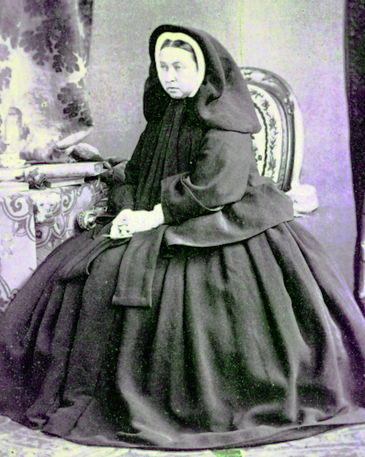
who wore mourning black from the time
of her husband Prince Albert’s death in 1861 till the end of her life
in 1901. Likewise, Amélie of Leuchtenberg who upon losing her husband
Pedro I of Brazil in 1834, wore mourning black until her death
in 1873. In those days death was properly, officially mourned. No one
chivvied mourners along with their grief and sadness. Contrast this
with today’s all-too-prevalent disassociation, the confused,
disorganised quasi-denial and suppression we moderns show towards
death13
Is there anything worse than the so-called five stages of
grief or the Kübler-Ross model? Grief as an emotional malfunction
to be systematically reduced, fixed, corrected? Alas.
. For the early nineteenth century, poetising life’s train
of tragedy was depression deconstruction as a life skill. The slings
and arrows of human existence found conjunction with nature,
darkness, and faith through poetry, thereby highlighting,
elevating our uniquely human experience on Earth, casting a gossamer
of sublimity over our natural existence like no other generation
before or since. Theirs was the deepest exploration of our true
humanness that I know and, thus, something I must pursue.
But why Dark?
But still, why Dark14 Allow me German noun capitalisation for poetic emphasis. ? Dark speaks to me, but, again, why? Lack of a clear and simple answer begs a wordier one. Dark remains mysterious—no matter how I try to imbibe or express it. Dark is something instinctual, cathartic, evocative, centring for me. Dark is more than the lack of light. The moss, lichens, and mushrooms in the secretive shadows of the forest appeals more than the spectacular sunny vista across the forest valley. The fresh-cut rose elicits one response, but the faded rose another—deeper but for me never dysphoric. Here is something from my novel Emily of Wolkeld15 Lots more about my novel as we go.
The new cut rose: Initially beautiful, thereafter dried and desiccated, lost forever its initial beauty and fragrance. Once affording a glimpse of perfection, only reminiscent thereafter. Beauty always some fleeting illusion or madness? Moreover its eclipse, joining, leading the shadows of our relentless doom, our march to the grave. And though I live in this momentary brilliance, I still search my night shore; for until now I have known only of beauty’s haunting rumour, of love’s promise, those slightest quickenings of things necessarily rare and formerly peripheral. Yes, in this moment I may have some of love’s bliss, but I know I will cherish with a larger, more mature heart the memory thereof, an echo sent down life’s long, clouded memory hall as the true and lasting blessing.
Yes, there might have been a dinner invite for me back in the day.
Let’s see another example of get-it-or-don’t, this time a poem from
Emily Elizabeth Dickinson16
See here for a quick biography.
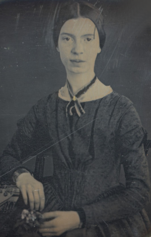
of Amherst, Massachusetts,
her There’s a certain slant of light17
In the third line, Heft means weight, heaviness; importance,
influence; or (archaic) the greater part or bulk of something.
There’s a certain Slant of light,
Winter Afternoons —
That oppresses, like the Heft
Of Cathedral Tunes —
Heavenly Hurt, it gives us —
We can find no scar,
But internal difference —
Where the Meanings, are —
None may teach it – Any —
’Tis the seal Despair —
An imperial affliction
Sent us of the Air —
When it comes, the Landscape listens —
Shadows – hold their breath —
When it goes, ’tis like the Distance
On the look of Death —
Indeed. That last line includes Death capitalised18 Again, Dickinson often employed the capitalising of nouns for poetic emphasis. . Now I must emphasise these nineteenth-century artists understood death much differently than we do today. Unfortunately, this capitalised, past-century view of Death has become opaque, lost. I hope to rediscover it. I’ll start by stating their understanding of Death was integral to their understanding of nature…
Nature and Death in the nineteenth century
The main points being:
- True nature is birth, growth, deterioration, and death, full stop…
- …ergo, nature is not a place, inside or out, rather, a state of being…
- …ergo, no degrees of nature, rather, nature constant ubiquitous…
- …ergo, death is an integral part of true nature
- The increasingly extra-natural, quasi/proto-immortal human
- Direct exposure to nature dominant versus managing ecosystems
I hold that our modern, twenty-first-century understanding of nature
is very different than that of early-nineteenth-century poets such as
the Haworth and Amherst Emilies19
My shorthand for Emily Brontë and Emily Dickinson is based on
their towns of origin — Haworth, West Yorkshire, for the former and
Amherst, Massachusetts, for the latter.
and their contemporaries. Just
considering our indoor living environments today, a typical modern
building is more like a sealed space station plopped down on a
hostile alien planet compared to the simpler, more primitive
structures of the not-so-distant past. Quite literally, the Brontës’
Haworth parsonage, built in 1778 out of local stone and wood and clay,
had more in common with human shelters from one, two thousand years
previous than with our modern suburban homes only some two hundred
years later20
Deep indoors deep in the forest…
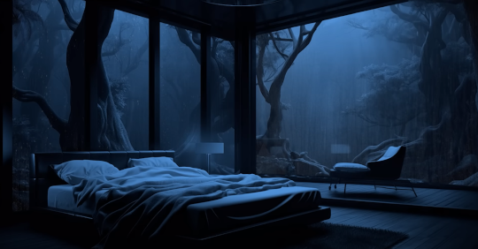
. Hence, in just the past two to three hundred
years a very steep, vertical gradient or differential has grown
between indoors and outdoors. This, in turn, has brought us to see
nature more as a place separate and outside, cut off, away of our
artificial, high-tech, controlled and regulated modern indoor
spaces21
Is it not ironic how nearly every lifeform that attempts to
share our human environments uninvited are considered invasive,
noxious vermin, pests to which we have developed almost hysterical
revulsion?
… which, in turn, has lead us to rate outdoors
nature on continua of relative wildness and remoteness from our
sealed-off, self-contained, humans-only environments.
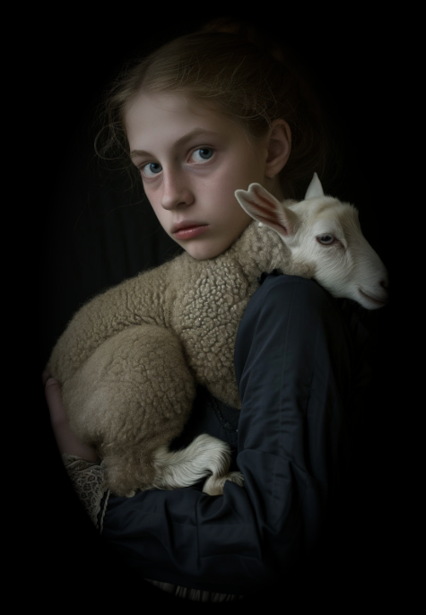 Homespun and one of its sources. Original art from Steve-Lease (DeviantArt.com)
As late as my own childhood I remember hearing the term homespun to refer to a poor, unsophisticated person, a country bumkin, a hick from the sticks. The term referred to a person’s clothing being homemade from locally-sourced, hand-spun and woven materials such as linen and wool rather than factory-made retail clothing. The Brontëan early-nineteenth century of Yorkshire would have had a majority of the villagers wearing homespun, all but a few garments not hand-tailored bespoke22 Cotton was rapidly becoming a global commodity, both cotton and wool fabrics eventually being produced in steam-powered factories as the Industrial Age reached its inflexion point of growth. . And of course food was entirely local. Meaning a person’s daily resources were majority local, a small bit coming from a nearby market town, while only the most exotic items (e.g., a clock) would have come from farther away. Today, however, this supply pyramid is completely flipped, as nearly everything comes from far (far!) away (e.g. China) while only a few personal items would be from a local or even regional source23 In any modern (non-organic Amazon Whole Foods-style) supermarket I’m sure less that 1% of the food items come from a truly local source. Nearly everything is shipped in from often far afar. . And so in Brontëan times the surrounding land was agriculturally domesticated, a working partner. Contrast this with today’s urban-suburban populations hardly ever in contact with farmers or their farms. And we rarely know where our clothing came from. Nature as “the land,” as our immediate provider, has been completely abstracted into concepts such as ecosystems, which implies the human is a removed observer controlling nature as if it were a machine.
Surely humans have always made a distinction between being inside a shelter and going outside into the so-called elements. But starting some six to ten thousand years ago we began to give up aboriginal nomadic life with its direct daily contact with said elements to establish permanent city-states supported by land-domineering monoculture agriculture. And so indoor environments in ever-expanding urban centres, evermore physically removed, walled off from the wild natural world, became increasingly self-contained, all-encompassing, self-referencing, recursively derivative24 …e.g., what is a flower garden but a derivative, a mock-up of an original place out in the wilds, albeit with the pretty bits super-amplified idealised, the not-so-pleasant bits left, weeded out? .
Along with this growing separation came mentalities, narratives increasingly based indoors and extra-natural 25 How often is a Shakespeare character out communing with nature? Never?… . Being indoors meant we no longer were in direct contact with the nature spirits all around; instead, praying to an extra-natural, off-world monotheistic God in architectural showcase churches26 Churches were typically built in the centre of a town or city on the highest ground. I once heard that to this day no building in Vienna may be built taller than the tower of St. Stephen’s Cathedral. . Western architecture seemed to reach a fantastical aesthetic crescendo in the Victorian nineteenth century27 …with dark, dense, dramatic Neo-Gothic as a leading style. Indeed, seemingly all nineteenth century styles were “revivalist-nostalgic” (Greek, Gothic, Italianate, Elizabethan, Queen Anne, etc.), perhaps a hearkening back to times more integrated with nature, with shallower gradients between indoors and outdoors? , coinciding with an exponential growth in urban population which had just passed an inflection point. Today the steepness of our indoor-outdoor gradient has increased even more since Victorian times … resulting in a humanity more abstracted extra-natural than ever. How then can we, a species seemingly capable of great adaptability28 Adaptability leading to, A) a permanent (beneficial) alteration, or B) a temporary adjustment, allowance for less-that-optimal conditions, supposing an eventual return to optimal conditions. We humans, I contend, are B-adaptable. This means we are certainly no barometer species or “canary in the coal mine” of our own well-being. We routinely ignore our fellow canary-like humans, allowing them to suffer and die, their warnings unheeded. , objectively measure our separation from nature? What has domestic, urban, indoor living done to our brains, our sense of belonging to the planet, to one another? How can we even begin to trace back the many rabbit hole bifurcations, the chain of derivatives we’ve taken for all these centuries down, out, and away from nature pure? To be sure, we have demonstrated a collective will to make conditions better for us and us alone. We see our dominion over, abstraction away, separation from nature as fate, as destiny. After all, our population doubling in less than fifty years to eight billion29 Human population grew 60% between 1800 and 1900, and 260% between 1900 and 2000. says something to our intention and ability to dominate. And we seemed to have adapted our collective human psyche, our narratives to this separation30 Modern human narratives come at us as thousands upon thousands of fictional novels, films, plays, while aboriginal peoples had myth and legends timeless and unchanging. That alone… . But is this sustainable? All dark musings aside, some of us have become concerned over the question of sustainability, concerned about our long arc of estrangement from nature31 Is our relatively gradual separation from nature not a perfect example of the boiling frog metaphor? . Let me suggest a different understanding of nature, namely—
Nature is not a place inside or outside of our human spaces, rather, nature is everything going on everywhere. Nature as the myriad cycles of birth, growth, deterioration, and death going on everywhere.
I contend the Brontës, as well as other Romantic Era poets, sensed this pre-modern meaning of nature as sans localisation inside or outside. Yes, one went outside, out into the elements. But once back indoors, a Brontë was not so completely out of and above nature’s touch, influence, doom as we now fancy ourselves. Again, the cycles of birth, growth, deterioration, and death were happening everywhere sans emplacement 32 Consider how the Industrial Revolution created urban production landscapes vast and barren and completely outside of any sort of nature, spatial or otherwise. Indeed, William Blake’s “satanic mills.” This was a change on a scale never before seen, a huge and sudden step away from the physical world being solely the purveyance of nature. Even when the individual left his house he was still deep within a massive concentration of extra-natural, human-exclusive activity. . Here again is Emily Brontë, her epic The night is darkening round me
The night is darkening round me,
The wild winds coldly blow;
But a tyrant spell has bound me,
And I cannot, cannot go.
The giant trees are bending
Their bare boughs weighed with snow;
The storm is fast descending,
And yet I cannot go.
Clouds beyond clouds above me,
Wastes beyond wastes below;
But nothing drear can move me;
I will not, cannot go.
Yes, she refers to the outdoors. She even refers to the wilds as “wastes”33 In those days wilds were often referred to as wastelands. and as drear. And yet she is transfixed, frozen to the spot—and I cannot, cannot go, she says. Subjective terms like wastes and drear remind of the age-old attitude of nature as a terrible, grim, inescapable master, a sponsor of disaster and death, hardly over which to wax poetic. But Romantic Era poets did just that, and to be sure, sublimely. Haworth Emily stopped, turned around, and stared directly into an enemy previously known as all-powerful and unforgiving, and in so doing she sensed something deep and found sublimity evoked, then she brought to us in her lines of poetry a new way of being more human34 Contrast this inescapable nature back then with Hemingway’s nature. Sure, he went to relatively remote places to play the macho man. But if anything serious happened he could always be airlifted out. The Romantic Era poets—supposedly effete and sappy— were in nature always with no timeout, no escape. .
With nature as countless cycles of birth, growth, deterioration, and death going on all around, the last two components, deterioration and death, must be understood beyond our mechanistic modern take of just terminal, physical breakage and malfunction35 Couple this death as malfunction with atheism for a completely soulless mechanistic universe realism dumpster fire.“ . Especially death become Death, a quasi-spiritual force majeure. But today deterioration and death aren’t what they used to be. It’s almost as if they were cordoned off—at least under much greater human control than ever before. It’s as if through modern medicine we have begun to acquire a demi-godlike, proto-immortal veto power over physical demise. And with this control we have torn down, dismantled a great component of spirituality, namely the reckoning of one’s mortality with a deity. Where once was supposed a mortal, physical plane below an immortal, spiritual plane, we now would look only to the physical plane as exclusive. Alas…
Though for the meantime death remains an undeniable certainty. Death comes as it always has from old age, fatal accident, or from deadly physical aggression or predation36 For critters, predators are other bigger critters. For humans, predators are—outside of war and homicidal aggression—all but exclusively bacteria and viruses. . But a completely different attitude arises when modern healthcare’s labyrinth of diagnoses, drugs, procedures and surgeries routinely thwart what was once all but unstoppable. And so we’ve begun to lessen the mystery of Death, overturn fate and doom.
The days of our years are threescore years and ten; and if by reason of strength they be fourscore years, yet is their strength labour and sorrow; for it is soon cut off, and we fly away.
— Psalm 90:10
This is surely the old-fashioned take on death and its finalistic, absolute inevitability so resounding as to constantly shake and echo through life. Death as life’s backstop, container, timer, combinator, reaper37 Consider this goth version of the classic rock song. Had this been written in Brontëan times, it would have been no cheap, sentimental gimmick. .
What then if we start to take command of death’s agenda, rerouting death’s comings and goings? Psalm 90:10 is making the point that by no means are we guaranteed seventy or eighty years of life, and even if we get them they might not be that great. And yet we have grown to expect from the implicit promises of modern medical science a healthy, quality seventy, eighty, ninety, or even more years. And so modern medicine has disrupted the two last components of nature ubiquitous cyclic, i.e., deterioration and death. Modern science has lessened the wallop of tragedy, weakened overall the doominess of doom by redefining life as the circuitry of organic machinery, a mechanism that, in turn, is to be better and better repaired, maintained, improved against entropic wear-and-tear38 Consider the commonplace heart pacemaker, a device that literally commands the human heart with electronic pulses. .
Let me relate a modern story to our new attitude towards death. My father, who has since passed away, lost his third wife to lung cancer caused inevitably by decades of smoking39 Ironically, both of his previous wives had likewise died from smoking-related illnesses. . But instead of accepting this, he became angry and accused her doctors of malpractice, threatening lawsuits. Nothing came of this, but I wondered why such an irrational outburst? I finally theorised that he had explicated from all the buzz of the various possible medical interventions — including their probabilities of success or failure — a hope that the death sentence of lung cancer could, should be beaten by some technology lurking in some corner of the modern medical labyrinth. Alas…
Back in the day, no one would have second-guessed death’s arrival to such an absurd degree. Human life was like a boat with shallow gunwales, the waves of death able to lap over at any time. But today the fourscore years spoken of in Psalms has all but become an expectation of, a guaranteed minimum—even to the extent that old age and death are increasingly spoken of as “diseases” we can and should defeat. Death a nuisance. My father felt cheated when that three-, fourscore and more was not forthcoming. But as you may anticipate, I contend life is life only with death—death absolute and not theorised away. God must be somewhere in all this.
A sickly Anne Brontë40
Anne Brontë’s grave in Scarborough
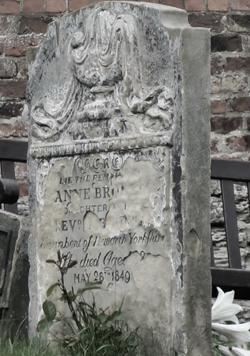
Perhaps watch this on Anne’s last days in Scarborough.
on her final dying trip to Scarborough in
1849 had made a stop in York where she insisted on seeing the York
Minster. Upon gazing up at the great cathedral she said, “If finite
power can do this…” But then she was overcome with emotion and fell
silent. Anne was in a deep and personal death mindset of utter and
complete humility and reverence. Indeed, God was in her death41
In my novel Emily of Wolkeld, which I will eventually
discuss, I have a character saying yes, she would get in a time
machine and go back the Brontëan times. And if you faced a fifty-fifty
chance of dying from a now curable, fixable condition? her friend
asks. Yes, she replies, I would trust my life, and trust my death.
.
Death rises as Romanticism: Novalis
The world must be romanticised. In this way we will find again its primal meaning. Romanticising is nothing but raising to a higher power in a qualitative sense. In this process the lower Self becomes identified with a better Self … When I give a lofty meaning to the commonplace, a mysterious prestige to the usual, the dignity of the unknown to the known, an aura of infinity to the finite, then I am romanticising. For the higher, the unknown, the mystical, the infinite, the process is reversed—these are—expressed in terms of their logarithms by such a connection—they are–reduced to familiar terms.
—Novalis
This is a quote from42 …quoted from the third volume, Fragmente, of Novalis: Werke, Briefe, Dokumente; Verlag Lambert Schneider; 1957. the German nobleman Friedrich Leopold Freiherr (Baron) von Hardenberg (1772—1801), aka, Novalis, who is considered to be the founder of the Romantic Movement. Yes, your read correctly. Most people don’t know that Novalis started it all. Specifically, it was his prose-poem entitled Hymns to the Night43 Allow me the abbreviation HTTN from here on. that set people off. And the gathering of German intellectuals in Jena, Thuringia, Germany, referred to as the Jena Set by Andrea Wulf in her Magnificent Rebels44 Magnificent Rebels, The First Romantics and the Invention of the Self by Andrea Wulf; 2022; Vintage Books. More about her very soon. rallied around Novalis, and subsequently tried to build on Hymns and Novalis’ romanticising/poetising. What came to be known as Jena Romanticism45 See the Wikipedia explanation of Romanticism or German Romanticism. They’re as good as any… eventually spread to eager, fertile grounds in Britain and the United States.
Alas, but here is where I become quite the iconoclast, primarily by insisting nearly everyone has got Romanticism wrong! I posit that Novalis with his foundational HTTN took off in a straight line into the Dark Muse like never before or since46 Soon will be discussed things dark from the eighteenth century. . Just reading HTTN, one cannot escape the sheer intensity of Novalis’ swoon-fest over Night and Death47 Try this George MacDonald translation as found in a publication from 1897. Amazing how obscure unknown the keynote address to the whole Romanticism convention has been. I’ll try at a better, annotated version soon. . Here’s a small taste
I feel the flow of
Death’s youth-giving flood;
To balsam and æther, it
Changes my blood!
I live all the daytime
In faith and in might:
And in holy rapture
I die every night.
and just before
What delight, what pleasure offers thy life, to outweigh the transports of Death? Wears not everything that inspirits us the livery of the Night? Thy mother, it is she brings thee forth, and to her thou owest all thy glory.
Simply put, HTTN is the densest, purest testament to the Dark Muse ever. As the legend tells, his inspiration came from was grief-stricken after the death of his fifteen-year-old fiancée Sophie von Kühn. Jena Set writer Ludwig Tieck described the teenage Sopie as
Even as a child, she gave an impression which–because it was so gracious and spiritually lovely–we must call superearthly or heavenly, while through this radiant and almost transparent countenance of hers we would be struck with the fear that it was too tender and delicately woven for this life, that it was death or immortality which looked at us so penetratingly from those shining eyes; and only too often a rapid withering motion turned our fear into an actual reality.
And yet, not a poetising gymnastics flip.
John Keats KISS vis-a-vis poetry.
Thriving versus surviving; top dog versus underdog
In his book The Genius of Instinct 48 The Genius of Instinct; Reclaim Mother Nature’s Tools for Enhancing Your Health, Happiness, Family, and Work by Hendrie Weisinger; 2009; Pearson Education, Inc. author and psychologist Hendrie Weisinger insists we are hard-wired by nature to seek out the best conditions in order to thrive, that any life other than one of maximal thriving is time and energy wasted. He uses the example of bats, which, according to research, have been observed to seek out human buildings, preferring them over natural homes such as rock outcrops, hollow trees, or caves. And in so doing, they enjoy advantages such as better body temperature regulation, lower infant mortality, less threat of predation. This may be true, but wait, haven’t these bats jumped outside of the original constraints where they once were completely integrated with nature? These advantaged bats are now in a state of trans-bat-ism. But is that a good thing? For the bats maybe, but for nature as a whole?
Perhaps bats doing better is not too much of an imbalance vis-a-vis the rest of their surrounding environment49 Here in woodsy Minnesota we haven’t noticed a shortage of mosquitoes, one of bats’ primary food sources. . And yet what happens when a species keeps thriving more and more, increasing its success statistics, stepping over, beyond any of the natural restrictions that real integration and harmony with nature would have required? Aren’t we humans Exhibit A of just such an out-of-control species? And so I ask, how can this be good, end well? How can a dominant species like ours, which seems to be always “gaming the system,” evermore extra-natural, not eventually have to pay some price? Simply put, How can more and more people consuming more and more resources and energy, each of us fantasising about reaching top-dog success and prosperity, not result in an eventual overshoot disaster?
Nature seems to have two and only two models: A) steady-state niche/stasis and B) exponential, dynamic growth. And whenever a species is not restricted to its tightly integrated niche, then exponential growth ensues—which will eventually hit an inflexion point and take off dramatically and uncontrollably towards an inevitable overshoot and crash.
To my mind Emily Brontë was a sort of hard-pressed little bat out in the wilds—colony-less, huddled in a hollow tree, barely eking out a marginal life. Here is her Plead for me
Why I have persevered to shun
The common paths that others run;
And on a strange road journeyed on
Heedless alike of Wealth and Power—
Of Glory’s wreath and Pleasure’s flower.
These once indeed seemed Beings divine,
And they perchance heard vows of mine
And saw my offerings on their shrine—
But, careless gifts are seldom prized,
And mine were worthily despised;
My Darling Pain that wounds and sears
And wrings a blessing out from tears
By deadening me to real cares;
And yet, a king—though prudence well
Have taught thy subject to rebel.
And am I wrong to worship where
Faith cannot doubt nor Hope despair,
Since my own soul can grant my prayer?
Speak, God of Visions, plead for me
And tell why I have chosen thee!
I consider this her ode to skipping the trans-human thrive scene of her day and striking out into some Beyond. Again, I must believe she was a little bat driven across the semi-wilderness moorland, as true an existential underdog as was still possible back then50 Compare with today’s outdoor adventurer with technical gear from REI, Patagonia, North Face, driving to government set-aside wilds in a four-wheel-drive Jeep Cherokee, consuming protein bars and electrolyte drinks, listening to music with earbuds, taking smart phone pictures and GoPro videos. Any mishaps? Call for immediate helicopter rescue on a satellite connection… At some point we’re just amateur Earth astronauts, no? . Emily Brontë died of anorexia-induced malnutrition, contaminated water, tuberculosis — pick one, two, or all three—five months after her thirtieth birthday. She only saw the greater world outside of her tiny Haworth village and its surrounding hills for a few months51 A stay in Belgium to learn French and a gig in nearby Halifax as a governess. . Hers was a world with nothing modern as we know it, e.g., a cut on a toe could lead to an infection requiring amputation, or even worse.
Still, one might still ask if her existence in the early nineteen century was really so very wild and rugged. Was she still not observing nature from civilization’s relative place of safety, thereby rendering her observations just as relative as ours today? I say no. Clearly our modern place of safety is maximal, as we of the twenty-first century float above in unprecedented levels of modern high-tech materialism52 We consume one hundred times the resources and energy per capita as one of our European ancestors from 1800. . But I contend hers was a unique observation vantage point, neither to exposed nor removed from elemental nature.
When modern scoffers think of how the Romantic Era poets perceived and reported nature, we might think of picnics where dandies and their pampered ladies are attended by servants at garden-like country estates like from the Hollywood film version of Jane Austen’s Emma
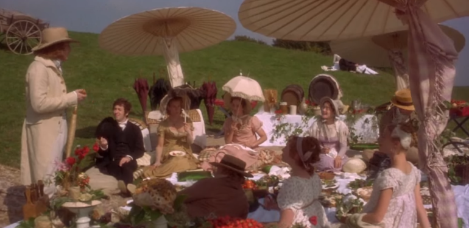 Emma picnic in the harrowing wilds of Englandor playful romps like Hollywood’s latest anachronistic redo of Emily Brontë depicting her rolling down a grassy slope in some domesticated country setting
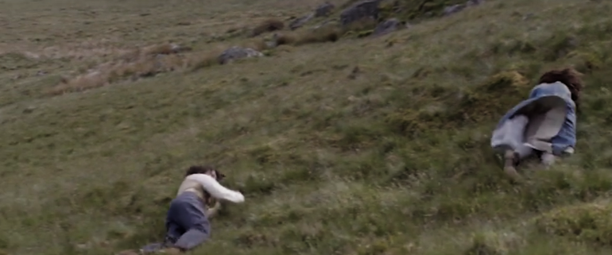 Fictional E.B. in a silly, carefree moment tumbling down a hill(From the 2022 film Emily)
For modern tastes nature is nothing as seemingly tame as Hollywood’s England back then. Again, for us nature is a place, a location far away from our modern interior spaces. Nature is the Great Outdoors. Again, the farther afield from modern civilization we can go, the truer and more authentic nature supposedly becomes. And so a nature continuum whereby a trackless wilderness as far from civilization as possible is the truest nature, while the least nature would be, e.g., a ditch overgrown with weeds behind one of our forced-air-HVAC, triple-paned windowed, vinyl-siding-clad suburban houses. Nature can only be very wild, thus, very far away from the safety of civilization. Writers like Ernest Hemingway and Jack London exploit this fright memes of nature as a distant, hostile place. Which is virtually identical to science fiction stories of hostile alien planets “conquered” by brave, intrepid astronauts. To be sure, many sci-fi depictions of alien worlds are simply off-Earth versions of London’s Klondike Yukon.
Graveyard School versus Night and Graveside Schools
After writing on my novel Emily of Wolkeld for the past seven years I have made a rather bitter discovery, namely, that mankind is largely wandering about clueless — seriously clueless.
One key turning point was to finally understand what John Keats meant in his Negative Capability letter to his brother. In it he describes what he means by Negative Capability, the ability to not rush to philosophical conclusion, rather, to let a sort of cognitive dissonance run its course. But then Keats also condemns Samuel Coleridge’s obsession with philosophical truth, repudiating his Biographia Litararia, which was Coleridge’s attempt to, among other things, bring the bulk of German Romanticism to a British audience.
Really feeling
The best and most beautiful things in the world cannot be seen or even touched — they must be felt with the heart.
— Helen Keller
Grand Marais, my sepulchre by the sea?
One of my earliest brushes with Dostoevski’s presence of eternal harmoy came to me on a Halloween night back when I was a little boy in a small Southern Illinois town. We were trick-or-treating on our street, the oldest neighborhood in town with Victorians, cobblestone, and gas streetlights. At some point I felt like I had left the present and entered another dimension, a nighttime fairy forest of bare trees. Everything was magical, and yet as a child not yet disabused of magic, I didn’t think anything was too out of the ordinary. I distinctly remember looking up into the dense, bare branches of a huge old oak and seeing the moon looking in and out of crossing clouds and feeling like I was a spirit entered another world. Tonight, I can see this other world of shadow and magic as I look out at my waning-moonlit Inland Sea over the treetops of dark spruce and gnarled, bare aspen.
I live in the far-northeastern tip of Minnesota on the so-called North Shore of Lake Superior, in the very last county, Cook, along the shore before the Canadian border. This so-called “Arrowhead Region” holds some three million-plus acres of wilderness on the shores of the world’s largest body (by surface area) of freshwater. And to my mind, this is a very Dark Muse kind of place, so much so that I cannot go, I cannot go. Pictures may be worth a thousand words, but our dark vibe here must be experienced to be really appreciated.
Though I’m wont to call Lake Superior the Inland Sea, thus, North Coast instead of North Shore. This is due to her being so much more sea-like than any lake. To my thinking, a lake is something much smaller and much friendlier. The Inland Sea is big and often violent like any sea or ocean of saltwater. She’s no simple lake for beer-and-brats picnickers, windsurfers, speedboat and jet ski riffraff53 Wetsuits de rigueur. Even in summer a dunk in her lasting more than ten minutes can lead to hypothermia … at least on the North Coast. Wisconsin and Michigan beaches can be swimmable in the summer. . She has a mighty présence, often dark and moody if not threatening.
A deep moodiness prevails. Here is nothing really spectacular in the sense of the Great Outdoors overwhelming with one postcard vista after another—as we think of the American West and Alaska. Rather, here is a more subtlety, more reserve, more mood.
Though I feel quite alone here in this assessment. My little village, Grand Marais, the county seat, is only some thirteen hundred souls. And yet as the years go by we are becoming evermore suburban-like in mentality. Being a popular Northern Midwest resort town, We have a steady stream of newcomers who increasingly are not adapting to small-town life; instead, maintaining their aloof, disengaged, blinkered urban-suburban ways. So often one encounters another supposed fellow human—only to receive the “you don’t exist” treatment common on a street in Manhattan.
Another social-psychology pitfall is how many people came up from a Chicago or especially Twin Cities suburb ostensibly to reinvent themselves. They’ve made the leap out of the sterile, soulless clone-bunny suburbia to now be some new version of themselves. They typically use Hemingway and Jack London, i.e., a macho attitude about wilderness and what. I call this Neo-Klondikism.
Steger etc. totally different from the real pioneers of late 19th-, early 20th-century who brought Victorian civilization to the wilderness.
Grand Marais is my “sepulchre by the sea.”
Quietude and contemplation in a place far from civilization.